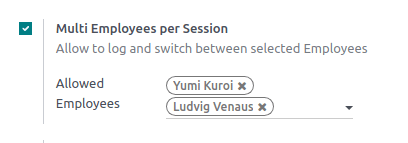
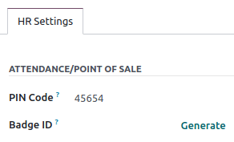

Gestión de varios empleados¶
Con la función múltiples empleados por sesión del Punto de venta de Odoo usted podrá gestionar el acceso a un PdV en específico. Al activar esta función usted puede elegir qué usuarios pueden iniciar sesión en el Punto de venta y podrá saber qué empleados están involucrados en cada orden para darles seguimiento.
Configuración¶
Ingrese a los ajustes del PdV y seleccione su Punto de venta o haga clic en los tres puntos (⋮) que aparecen en la tarjeta de cada PdV y haga clic en Editar. Active la función Múltiples empleados por sesión y agregue los empleados permitidos en el campo Empleados permitidos.
Aplicación práctica¶
Una vez que haya activado la función, los cajeros podrán escanear su tarjeta de empleado para iniciar sesión. También podrán seleccionar su nombre en la lista de empleados permitidos para abrir la sesión.

Para cambiar de usuario desde una sesión abierta, haga clic en el nombre del empleado en la parte superior derecha de la pantalla y seleccione al empleado de la lista con el que quiere cambiar.

También le puede pedir a sus empleados que ingresen un código NIP cada vez que inicien sesión en un Punto de venta para evitar que inicien sesión como alguien más. Para definir el código NIP, vaya a la aplicación Empleados, abra el formulario del empleado y haga clic en la pestaña Ajustes de RR. HH. Después, vaya a la categoría Asistencia/Punto de venta y en el campo Código NIP ingrese el código que desee
Inicio de sesión con credencial¶
Si quiere que sus empleados puedan iniciar sesión al escanear una credencial, se les debe asignar un ID de credencial. Para hacerlo, vaya a la aplicación Empleados, abra el formulario de empleado y haga clic en la pestaña Ajustes de RR. HH. Después vaya a la sección de Asistencia/Punto de venta e ingrese el número de credencial que quiera en el campo ID de credencial o haga clic en Generar.
Si quiere cambiar a otro usuario, haga clic en el icono con forma de candado (🔓), bloquee la sesión y escanee sus credencial.
Analítica¶
Una vez que cierre y publique la sesión del punto de venta, podrá ver el reporte completo donde vienen todas las actividades de la sesión, como quién inició la sesión y quién gestionó algunas órdenes específicas. Para acceder al reporte de la sesión haga clic en los tres puntos verticales (⋮) en la carta del Punto de venta y seleccione Sesiones desde la sección de Vista. Después, seleccione una sesión específica para información más detallada y después haga clic en el botón de Órdenes para ver la lista de todas las órdenes que se realizaron durante la sesión.
Para obtener un resumen de las órdenes sin importar la sesión, haga clic en los tres puntos verticales (⋮) en la carta del Punto de venta y seleccione Órdenes en la sección Vista.